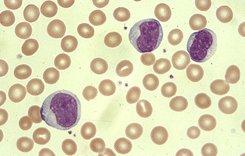

Atypical lymphocytes in infectious mononucleosis

Peripheral smear from a patient with infectious mononucleosis shows 3 atypical lymphocytes with generous cytoplasm.
Courtesy of Carola von Kapff, SH (ASCP).
Graphic 55986 Version 3.0